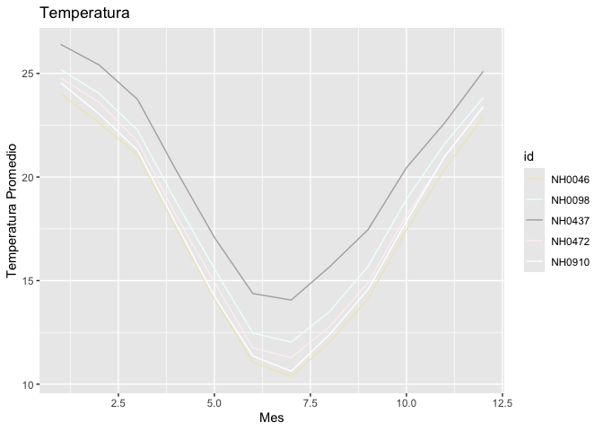

El objetivo del PaqueteMeteorologia es el analisis de dataset de datos de estaciones meteorologicas.
Instalacion
Puedes instalar el PaqueteMeteorologia desde GitHub con:
# install.packages("pak")
pak::pak("marcosziadi/PaqueteMeteorologia")Ejemplo de uso del paquete:
Este es un ejemplo basico de como puedes solucionar un problema comun:
library(PaqueteMeteorologia)
## basic example code
celsius_to_fahrenheit(3)
#> [1] 37.4
grafico_temperatura_mensual(estaciones_merged)
tabla_resumen_temperatura(estaciones_merged)
#> # A tibble: 5 × 4
#> id min_temp max_temp mean_temp
#> <chr> <dbl> <dbl> <dbl>
#> 1 NH0046 -0.25 34.6 17.3
#> 2 NH0098 -17.4 37.4 18.6
#> 3 NH0437 2.1 36.3 20.2
#> 4 NH0472 0.55 34.8 18.0
#> 5 NH0910 0 35.2 17.7Para ver el uso de todas las funciones del paquete puede ingresar a la siguiente pagina: PaqueteMeteorologia
Contribuciones al paquete
Si deseas realizar contribuciones al paquete debes ver el codigo de contribucion:
https://github.com/marcosziadi/PaqueteMeteorologia/blob/master/.github/CONTRIBUTING.md
Codigo de conducta
Este es nuestro codigo de conducta:
https://github.com/marcosziadi/PaqueteMeteorologia/blob/master/CODE_OF_CONDUCT.md
Licencia
El paquete cuenta con licencia MIT.
https://github.com/marcosziadi/PaqueteMeteorologia/blob/master/LICENSE.md